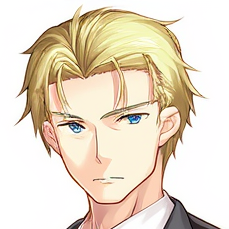

Side Characters and Retired Characters
Ethan
Scott
Akane
Danielle
Lola
Nolan
Katrina

Ryker
Audry
Hammer-chan
Elizabeth
Sylvie
Darxi
Andrew
Mr. Go
Veronica
Ilya Momo
Alenka
Beatrix
?
Sapphire
Lexi
?
Future Sapphire
×
?
ü§î:
ü§™:
Chat üó£Ô∏è
|
Copy Card üì∑